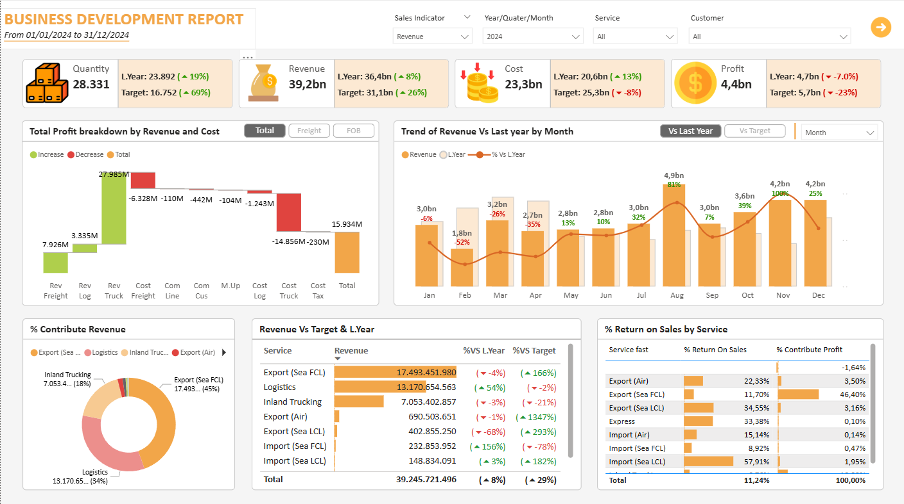
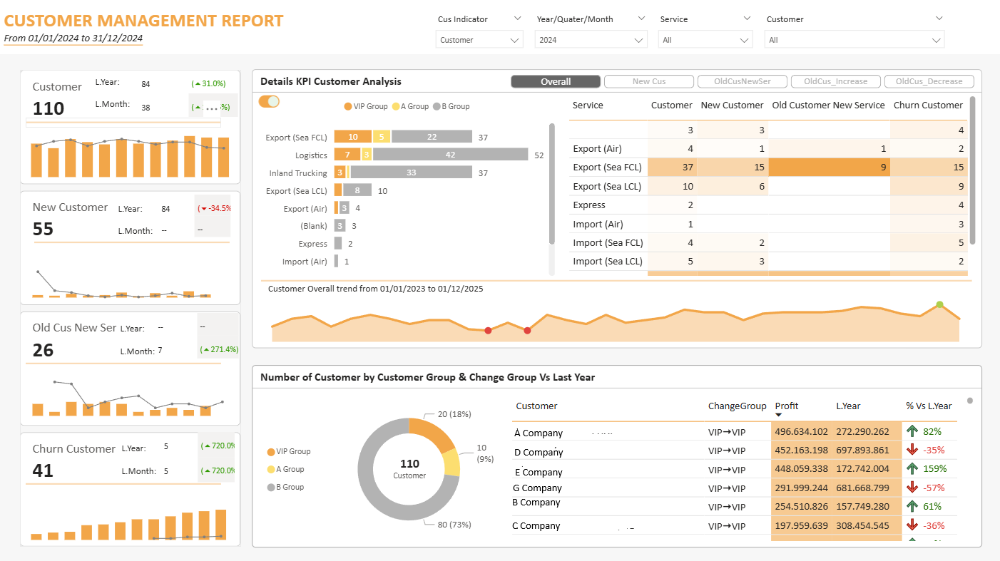

July, 2025
Logistics Analytics Project
This Power BI report provides insights into business performance by analyzing services and customer behavior.
It tracks new and returning customers, employee performance, and churn trends over time.
The report helps businesses evaluate growth, target high value segments, improve customer retention, and reduce churn by up to 15%.
Business Performance Evaluation and Key Insights

In 2024, the business achieved strong revenue growth of 8% year over year and exceeded the target by
26%, indicating effective business expansion. However, profit declined by 7% due to costs
increasing faster than revenue, leading to a shrinking profit margin.
-
Export Sea FCL is the main revenue driver, contributing approximately 45% of total revenue, but
shows declining efficiency with lower year over year performance and a relatively low return on sales.
-
High margin services such as Import Sea LCL and Export Air demonstrate strong profitability but currently
contribute a smaller share of total revenue, indicating growth opportunities.
-
Logistics and Inland Trucking account for a large portion of revenue and costs, making them key areas
for cost optimization.
-
Monthly revenue trends show seasonality, with strong performance in the second half of the year and
weaker results in several early months.
Customer Management Evaluation and Key Insights
This dashboard provides a comprehensive overview of customer performance and behavior over time.
It enables businesses to monitor total customers, new and returning customers, and churn trends across services and customer groups.
By analyzing customer segmentation, service usage, and performance changes compared to the previous year, managers can identify high value customers, detect churn risks early, and evaluate the effectiveness of customer retention strategies.
Overall, the dashboard supports data driven decision making to improve customer loyalty and long term business growth.

In 2024, the total customers increased by 31% year over year, indicating overall customer
base growth. However, new customers declined significantly while customer churn increased and
highlighting retention risks despite expansion.
-
Growth is driven mainly by existing customers using additional services, showing strong cross sell
and upsell effectiveness.
-
Customer churn is concentrated in core services such as Export Sea FCL and Export Sea LCL which
require further investigation into pricing and service quality.
-
VIP customers represent a large proportion of the customer base, but several show declining profit
trends, posing a high business risk.
-
Customer performance varies significantly, suggesting the need for value based segmentation rather
than relying solely on traditional customer groups.
-
Churn trends increase over time, emphasizing the importance of early churn detection and proactive
retention strategies.